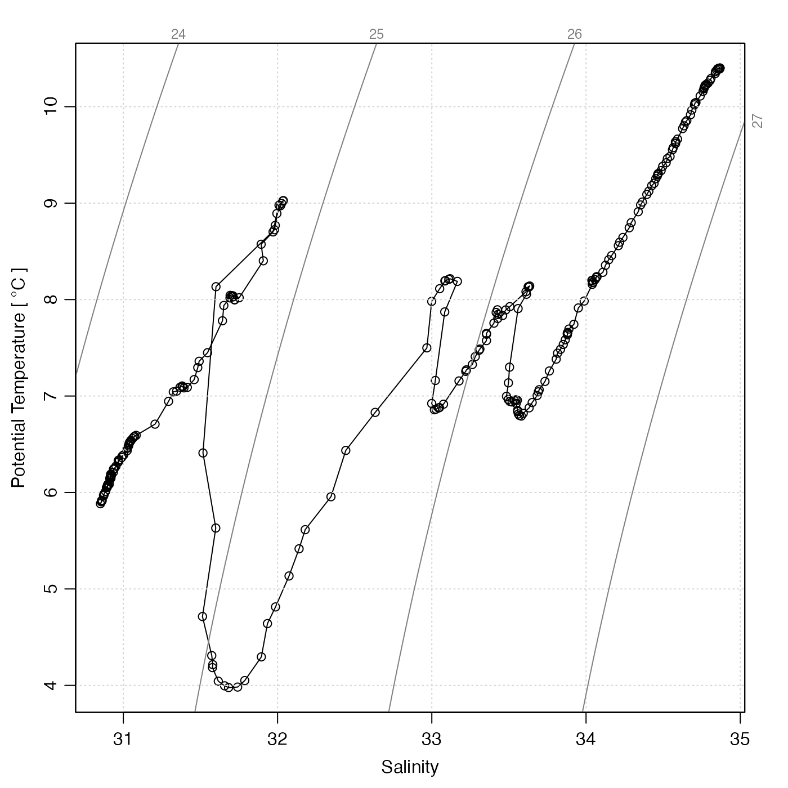
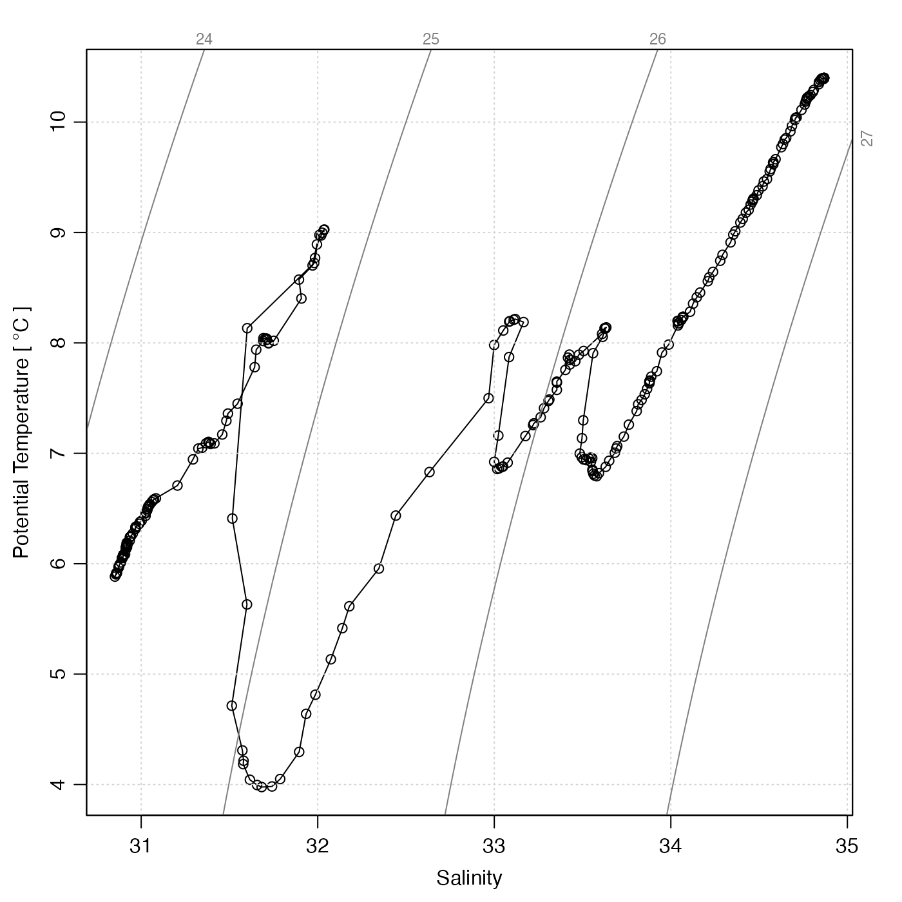

ODF (Ocean Data Format) is a
format developed at the Bedford Institute of Oceanography and also used
at other Canadian Department of Fisheries and Oceans (DFO) facilities
(see references 1 and 2).
It can hold various types of time-series data, which includes a variety
of instrument types. Thus, read.odf()
is used by read.ctd.odf for CTD data, etc.
read.odf(
file,
columns = NULL,
header = "list",
exclude = NULL,
debug = getOption("oceDebug")
)Arguments
- file
the file containing the data.
- columns
An optional list that can be used to convert unrecognized data names to resultant variable names. For example,
columns=list(salinity=list(name="salt", unit=list(unit=expression(), scale="PSS-78"))states that a short-name of"salt"represents salinity, and that the unit is as indicated. This is passed tocnvName2oceName()orODFNames2oceNames(), as appropriate, and takes precedence over the lookup table in that function.- header
An indication of whether, or how, to store the entire ODF file header in the
metadataslot of the returned object. There are three choices for theheaderargument. (1) If it isNULL, then the ODF header is not stored in themetadataslot (although some of its contents are). (2) If it is"character", the header is stored within themetadataas a vector namedheader, comprising a character string for each line of the header within the ODF file. (3) If it is"list", then themetadataslot of the returned object will contain alistnamedheaderthat has lists as its entries. (The sub-lists are in the form of key-value pairs.) The naming of list entries is patterned on that in the ODF header, except thatunduplicateNames()is used to transform repeated names by adding numerical suffices. Note: on June 6, 2019, the default value ofheaderwas changed fromNULLto"list"; in addition, the resultant list was made to contain every single item in the ODF header, withunduplicateNames()being used to append integers to distinguish between repeated names in the ODF format.- exclude
either a character value holding a regular expression that is used with
grep()to remove lines from the header before processing, orNULL(the default), meaning not to exclude any such lines. The purpose of this argument is to solve problems with some files, which can have thousands of lines that indicate details that are may be of little value in processing. For example, some files have thousands of lines that would be excluded by usingexclude="PROCESS='Nulled the .* value"in the function call.- debug
an integer specifying whether debugging information is to be printed during the processing. This is a general parameter that is used by many
ocefunctions. Generally, settingdebug=0turns off the printing, while higher values suggest that more information be printed. If one function calls another, it usually reduces the value ofdebugfirst, so that a user can often obtain deeper debugging by specifying higherdebugvalues.
Value
An oce object.
Details
Note that some elements of the metadata are particular to ODF objects,
e.g. depthMin, depthMax and sounding, which
are inferred from ODF items named MIN_DEPTH, MAX_DEPTH
and SOUNDING, respectively. In addition, the more common metadata
item waterDepth, which is used in ctd objects to refer to
the total water depth, is set to sounding if that is finite,
or to maxDepth otherwise.
The function ODFNames2oceNames() is used to translate
data names from the ODF file to standard oce names.
Metadata conventions
Some metadata items may be specific to certain instruments, and
certain research groups. It can be important for analysts to be aware of
the conventions used in datasets that are under study.
For example, as of June 2018, adp
objects created at the Bedford Institute of Oceanography may
have a metadata item named depthOffBottom (called
DEPTH_OFF_BOTTOM in ODF files), which is not typically
present in ctd files. This item illustrates the renaming
convention, from the CAMEL_CASE used in ODF files to the snakeCase
used in oce. Bearing this conversion in mind, users should not
find it difficult to understand the meaning of items that read.odf()
stores within the metadata slot. Users should bear in mind
that the whole ODF header is saved as a list by
calling the function with header="list", after which
e.g. str(rval[["header"]]) or View(rval[["header"]])
can be used to isolate any information of interest (but bear in mind
that suffices are used to disambiguate sibling items of identical
name in the ODF header).
Handling of temperature scales
read.odf() stores temperature data directly as read from the file, which
might mean the IPTS-68 scale. These values should not be used to calculate
other seawater quantities, because formulae are generally based in ITS90
temperatures. To avoid problems, the accessor function converts to the modern
scale, e.g. x[["temperature"]] yields temperature in the ITS90
scale, whether temperatures in the original file were reported on that scale
or the older IPTS-68 scale.
Caution
Lacking detailed documentation of the ODF file format, the read.odf() and
read.ctd.odf() functions were crafted based on inspection of data files, and
so some guesses had to be made.
The PARAMETER_HEADER chunks describing quality-control flags are
a case in point. These contain NAME components that
refer to other PARAMETER_HEADER chunks that hold measured data. However,
those references are not always matched well with the data names, and
even if they do match, the cross-reference syntax used by
the Bedford Institute of Oceanography differs from that used by
l’Institut Maurice-Lamontagne. To simplify coding, it was assumed that
each quality-control sequence applies to the data sequence
immediately preceding it. (This assumption is made in other
analysis systems.)
It is also prudent to pay attention to the units decoding,
which read.odf() handles by calling unitFromString().
Be on the lookout for incorrect temperature scales, which
are sometimes reported with nonstandard strings in ODF files.
Also, note that you may see warnings about conductivity ratios,
which some ODF files incorrectly suggest have dimensions.
References
For sources that describe the ODF format, see the documentation for the odf class.
See also
ODF2oce() will be an alternative to this, once (or perhaps if) a ODF
package is released by the Canadian Department of Fisheries and Oceans.
Other things related to odf data:
CTD_BCD2014666_008_1_DN.ODF.gz,
ODF2oce(),
ODFListFromHeader(),
ODFNames2oceNames(),
[[,odf-method,
[[<-,odf-method,
odf-class,
plot,odf-method,
read.ctd.odf(),
subset,odf-method,
summary,odf-method
Examples
library(oce)
#
# 1. Read a CTD cast made on the Scotian Shelf. Note that the file's metadata
# states that conductivity is in S/m, but it is really conductivity ratio,
# so we must alter the unit before converting to a CTD object. Note that
# read.odf() on this data file produces a warning suggesting that the user
# repair the unit, using the method outlined here.
odf <- read.odf(system.file("extdata", "CTD_BCD2014666_008_1_DN.ODF.gz", package="oce"))
#> Warning: "conductivity" (code name "CRAT_01") is a conductivity ratio, which has no units, but the file lists "s/m" as a unit. Consult ?read.odf to see how to rectify this error.
ctd <- as.ctd(odf) ## so we can e.g. extract potential temperature
ctd[["conductivityUnit"]] <- list(unit=expression(), scale="")
#
# 2. Make a CTD, and plot (with span to show NS)
plot(ctd, span=500)
 #
# 3. Highlight bad data on TS diagram. (Note that the eos
# is specified, because we will extract practical-salinity and
# UNESCO-defined potential temperatures for the added points.)
plotTS(ctd, type="o", eos="unesco") # use a line to show loops
bad <- ctd[["QCFlag"]]!=0
points(ctd[['salinity']][bad],ctd[['theta']][bad],col='red',pch=20)

#
# 3. Highlight bad data on TS diagram. (Note that the eos
# is specified, because we will extract practical-salinity and
# UNESCO-defined potential temperatures for the added points.)
plotTS(ctd, type="o", eos="unesco") # use a line to show loops
bad <- ctd[["QCFlag"]]!=0
points(ctd[['salinity']][bad],ctd[['theta']][bad],col='red',pch=20)
